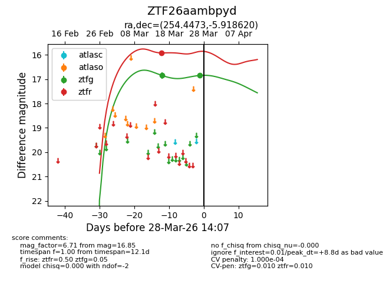
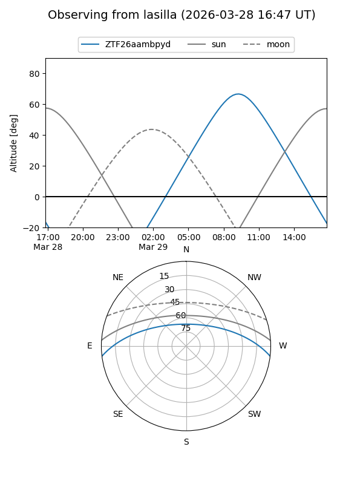
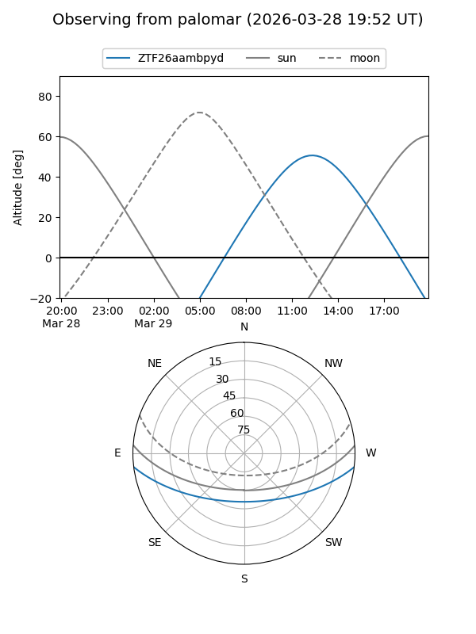
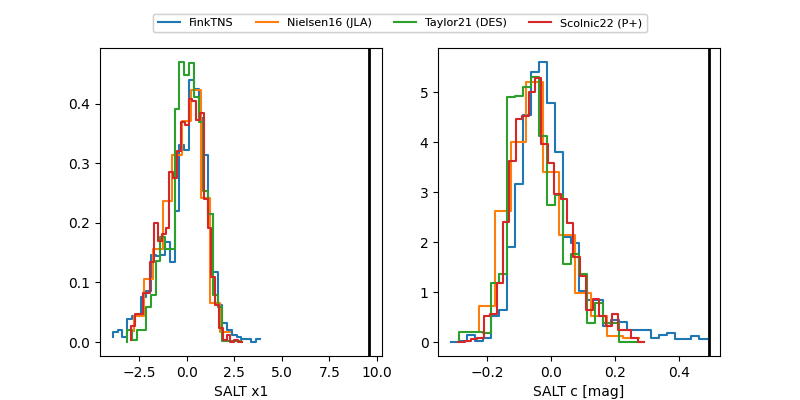

ZTF26aambpyd
Target ZTF26aambpyd at 2026-03-28 14:10
Aliases and brokers:
FINK: link
Lasair: link
ALeRCE: link
alt names
ZTF26aambpyd (ztf,fink_ztf)
Coordinates:
equatorial (ra, dec) = 254.4473,-5.91862
equatorial (HMS+DMS) = 16:57:47.36,-05:55:07.03
galactic (l, b) = (13.5616,+21.97420)
Flags:
likely cv
Photometry:
last ztfg=16.85, ztfr=15.92
2 ztfg, 1 ztfr detections
Lightcurve

Visibility


Additional plots
